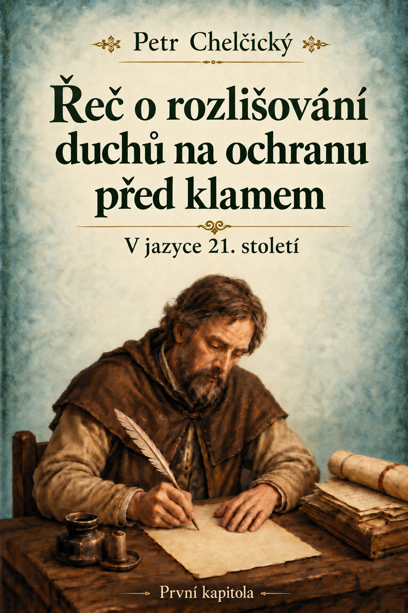

Poslední aktualizace stránky:
Řeč o rozlišování duchů na ochranu před klamem – první kapitola1
Potom2 říká svatý Jan: „Nejmilejší, nevěřte každému duchu, ale zkoumejte duchy, zda jsou z Boha, protože na svět vyšlo mnoho falešných proroků.“3
Svatý Jan často užívá oslovení „nejmilejší“. Toto oslovení však neužívá neupřímně, nýbrž v souladu s pravdou, protože po Kristu mu na tomto světě nebylo nic milejšího než ovce, které si Kristus získal svou krví. Tyto ovce miloval více než majetek, světskou slávu i vlastní život. Chtěl se tím zalíbit svému Pánu Ježíši Kristu, protože věděl, že Kristus tyto ovce miloval jako první a sám se za ně vydal na smrt.4 Nevěděl, jak by mohl svému Pánu prokázat milejší službu než tím, že bude horlivě pečovat o tyto ovce, aby je svým úsilím přivedl ke svému Pánu do věčného ovčince. Proto jim mohl bez přetvářky říkat „nejmilejší“, protože ze všeho, co mu bylo milé, byli právě oni nejmilejší.
To je řečeno v protikladu k antikristovi,5 který se vetřel do Božího stáda jako lupič, zloděj a námezdník, jemuž na ovcích nezáleží; jen je odírá, vraždí a přivádí do záhuby, pronásleduje je, vyhrožuje jim, proklíná je, trápí je vězením i smrtí, hanobí je a nadává jim, místo aby je utěšoval.6 Ten přišel po Janovi jako dravý vlk v ovčím rouše.7 Nemůže stádo oslovovat slovem „nejmilejší“, protože nad ním panuje krutě, a tak se ve všem ukazuje jako protivník Ježíše Krista a jeho apoštolů.
Svatý Jan však pečuje o Boží stádo, a proto říká: „Nejmilejší, nevěřte každému duchu.“ Věřit každému duchu je totiž také zlé a může Božímu stádu velmi uškodit. Svědčí to o lehkověrném srdci, které rychle a snadno uvěří.8 I kdyby někdo snadno uvěřil jen jednomu falešnému duchu, bylo by to zlé. Věří-li však mnoha falešným duchům, nastává nesmírný zmatek: člověk se zmítá sem a tam mezi jejich bludy, nemůže pevně setrvat při jediné pravdě ani ji mezi tolika bludy nalézt.9 Jak zde svatý Jan upozorňuje, na svět vyšlo mnoho bludných duchů a mnoho falešných proroků.
Ačkoli se už za apoštolů dalo mluvit o mnoha jednotlivých antikristech,10 kteří rozsévali rozmanité lži proti Kristově pravdě, ještě jich nebylo tolik, aby se rozšířili do všech koutů země mezi všechny národy, mocí si je podmanili a mohli mezi nimi nerušeně zavést všemožné lži. Ďábel mezi nimi podle své vůle prosadil rozmanité lži a naplnil jimi tak veliké množství národů.
A tak jejich počet ještě vzrostl: přišli další, kteří vystoupili proti těm prvním, aby odhalili jejich lež, jako by před nimi varovali lid. Potom však sami dolehli na lid se svými důkladně zahalenými bludy a těžce ublížili mnoha zástupům. Činili to pod jménem Ježíše Krista: mnoho o něm mluvili a před lidem ho chválili. Tím je od Krista odvedli. Uměli totiž lidu mistrně a působivě lhát s odvoláním na Ježíše Krista. Kacířské a pohanské bludy i židovské cesty přikrášlili vznešenými úvahami11 a moudrostí tohoto světa a překrucovali Písmo.12 Tak lid uvěznili v klamném přesvědčení, že je v Kristu,13 takže se domníval, že následuje Krista, ačkoli následoval kacíře, pohany i Židy. Oklamán těmito lžemi věřil, že ho vede svatý duch, přestože šel za ďábly a vzdával jim úctu.14
Kdo tedy dnes tomuto lidu, rozštěpenému a seskupenému do různých stran, říká: „Nevěřte každému duchu“? Vždyť už jej uchvátilo tolik duchů, že jejich počet zná jen sám Bůh. Tito duchové dovedou obratně lhát lidu, jenž je jako dobytek a zná jen své břicho. Dovolávají se přitom vznešených věcí Božích, andělských i nebeských; dovedou mu lhát také s odvoláním na hlubiny pekla i na tento svět a využívat přitom všech písem – Božích, židovských i pohanských. Kdo totiž na tomto světě zná jen své břicho, vypije všechno, jen když mu lžou sladce a podle jeho chuti, ať už se přitom dovolávají svaté Trojice, nebo pekla.15
Jen málokdo jim unikne z rukou. S těmito rozmanitými duchy je to totiž tak: nechce-li někdo jedno učení, najde si jiné, které vyhovuje jeho břichu. Každý lid si mezi nimi může najít lež, která se mu líbí a je oděna Bohem a Písmem,16 aby se za ní ochotně vydal právě skrze Boha a jeho Písmo. V domnění, že věří Bohu, se od něho svou nevěrou vzdaluje.
Ti, kdo v sobě mají lživého ducha, totiž přicházejí s takovými znameními, že by ve jménu Ježíše svedli všechny, dokonce i Boží vyvolené. Jen z pouhé Boží milosti se stane, že Bůh kvůli nim zkrátí ony strastiplné dny.17 O tom, jak jsou lidé klamáni, bylo řečeno mnoho.
Svatý Jan však zde mohl svým nejmilejším říci: „Nevěřte jim, ale zkoumejte duchy, zda jsou z Boha.“ To není pouhá lidská řeč ani promluva k duchovně opilému lidu, nýbrž je určena lidem s hlubším porozuměním víře, než jaké mají dnešní mistři. Tito mistři totiž ovládají sedmero svobodných umění, ale osmého, které je v Kristu, dosud nedosáhli.18 Proto nemají schopnost zkoumat duchy, v nichž působí odpor vůči Kristu, protože sami v sobě nerozpoznávají ducha toho, co se Ježíši Kristu protiví.19
Ačkoli jsou proslulí svou učeností a platí za význačné správce v pastýřských úřadech, nedosáhli v pasení stáda většího výsledku než toho, že lid udržují v jedech veliké nevěstky,20 na které je zvyklý. Je to lid chromý a mrtvý, jemuž za celý rok nedokážou říci nic víc než: „Obraťte se, ukažte se.“21 Nemohou mu však říci: „Tak pevně stůjte, nejmilejší.“22 Přivedli ho totiž k tomu, aby jednou sloužil ďáblům a jindy se zase obracel k Bohu. Proto mu nemohou říkat, aby pevně stál.
A protože sami spolu s lidem stojí mimo Boží zákon a nesou vinu za všechnu krev, která se na zemi prolévá,23 mohou stavět jeden lid proti druhému v krveprolití, loupežích a svárech. Slovy svatého Pavla jim ostří meč, jejich spor prohlašují za spravedlivý, aby bránili své statky, příkopy a hradby, a posvěcují boj jednoho lidu proti druhému, zatímco kněží na druhé straně posvěcují boj svého lidu proti tomu prvnímu.
Takoví lidé tedy nedokážou rozpoznat duchy, kteří se protiví Kristu, vždyť v nich není nic, co by bylo v souladu s Kristem. Kristus je jim jen sítí,24 aby skrze něj lapali pošetilý lid, uvrhovali jej do pekla, totiž do očistce, a věčně za tyto lidi prosili Boha.25 Proto je ten slepý lid, který oni napájejí jedy veliké nevěstky, ještě mnohem dál od toho, aby zkoumal duchy, zda jsou z Boha. Vždyť ani sám neví, kterému duchu náleží. Je totiž zcela smíšen s ďábly a Boha se skrze lež dotýká tak, jako se slepý dotýká stěny.26
Ani není možné, aby tento lid, který stojí pod mocí antikrista, zkoumal duchy, zda jsou z Boha. Nesmí se totiž nikam pohnout za hranice, které mu antikrist vymezil, ani si cokoli myslet o Bohu, leda podle jeho rady a příkazu. Proto antikrist zákonem ustanovil ušní zpověď,27 aby pronikl do svědomí všech lidí a vyzvěděl všechna jejich tajemství. Kdyby u někoho postřehl, že něčemu správně rozumí, ihned by ho zastrašil, aby nepřemýšlel víc, než se sluší, a nebyl opovážlivý. Jestliže se však někdo k něčemu pevně přikloní, označí ho za kacíře.
Jestliže však někdo dokáže s moudrostí a rozvahou zkoumat duchy, zda jsou z Boha, a podle skutků pozná, že jeho farář není z Boha, ale je apoštolem antikrista, a nebude mu proto věřit ani ho poslouchat, antikristův apoštol proti němu zakročí, obžaluje ho u světské moci, vydá ho do jejích rukou28 a přede všemi ho označí za kacíře vyloučeného ze svaté církve.
Kdo se tedy najde tak silný, aby se mu postavil a byl ochoten snášet od něho újmu na životě nebo na majetku? Takových by se dnes našlo jen málo.29
Více je však těch, kteří sice poznali, že antikrist není z Boha, ale ze strachu před ním se k němu zase podlézavě vracejí, pochlebují mu a přizpůsobují se těm nejhorším. Antikrist totiž zavazuje všechny k nejvyšší poslušnosti, aby se ani svým smýšlením, ani svými skutky neodchýlili od svaté matky římské církve, v níž ustanovil zákony pro všechny.
Máte postřeh k textu?
Zaujala vás některá myšlenka, narazili jste na nejasnost nebo chcete k textu něco doplnit? Budu rád za vaši zprávu.